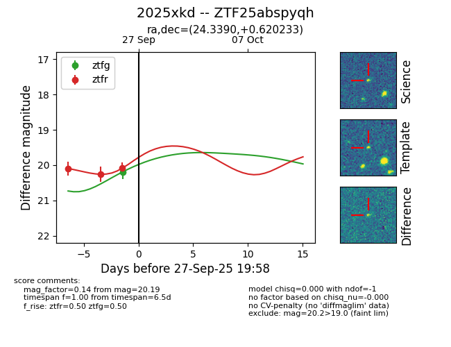
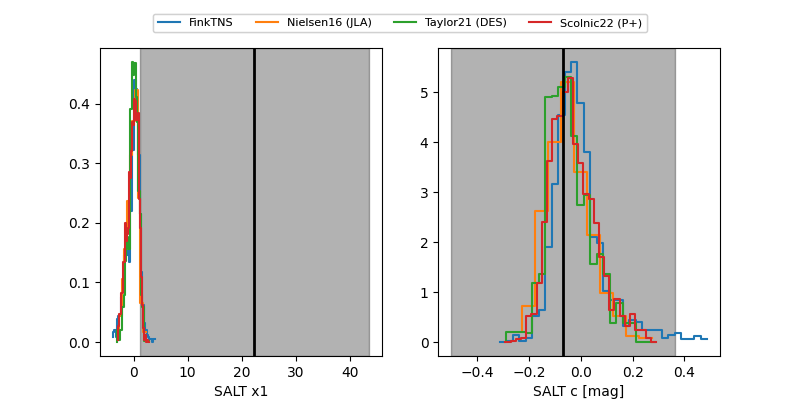

FINK: ZTF25abspyqh
Lasair: ZTF25abspyqh
ALeRCE: ZTF25abspyqh
TNS: 2025xkd
YSE: 2025xkd
ZTF25abspyqh (ztf,fink)
2025xkd (tns,yse)
equatorial (ra, dec) = (24.3390,+0.62023)
galactic (l, b) = (146.4876,-60.13459)


last ztfg=20.19, ztfr=20.08
1 ztfg, 3 ztfr detections